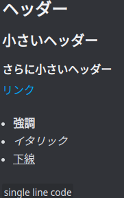
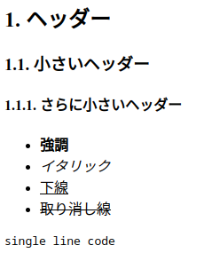
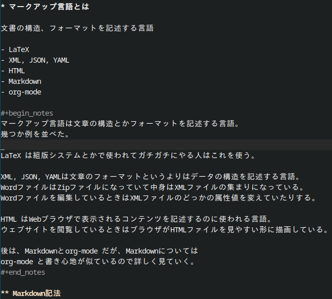

文書の構造、フォーマットを記述する言語
# ヘッダー
## 小さいヘッダー
### さらに小さいヘッダー
[リンク](https://youtu.be/dQw4w9WgXcQ)
- **強調**
- *イタリック*
- __下線__
`single line code`

* ヘッダー
** 小さいヘッダー
*** さらに小さいヘッダー
- *強調*
- /イタリック/
- _下線_
- +取り消し線+
=single line code=

#+begin_src C :results output
#include <stdio.h>
int main() {
https://x.com/thingskatedid/status/1370862460735868928
int number = 0;
char *string = (char *)&number;
0[string] = 'x';
1[string] = 'y';
2[string] = 'z';
3[string] = '\0';
printf("string = \"%s\"\n", string);
printf("number = %#010x\n", number);
}
#+end_src
C-c C-c で実行して結果が見れる
#include <stdio.h>
int main() {
https://x.com/thingskatedid/status/1370862460735868928
int number = 0;
char *string = (char *)&number;
0[string] = 'x';
1[string] = 'y';
2[string] = 'z';
3[string] = '\0';
printf("string = \"%s\"\n", string);
printf("number = %#010x\n", number);
}
string = "xyz" number = 0x007a7978

ox-reveal でスライド生成reveal.js フレームワークを元にスライド化
M-x load-library , then ox-reveal
Export: C-c C-e R R
int array[10];
array[3] = 0xbad;
[3]array = 0xbad;
array[3] = 0xbad;
*(array + 3) = 0xbad; // 糖衣構文
ポインタ加算 array + 3 は足す順番を
変えても同じ結果になるので…
*(3 + array) = 0xbad;
3[array] = 0xbad;